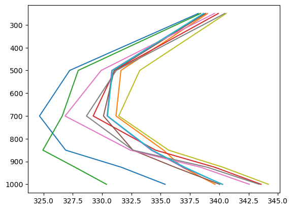
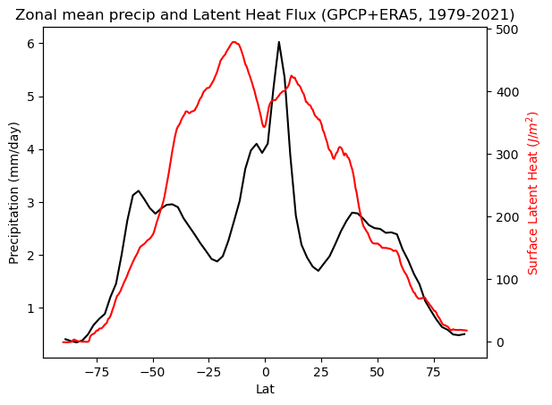

Contents
import numpy as np
import matplotlib.pyplot as plt
from sklearn.decomposition import PCA
#!pip install netCDF4
from netCDF4 import Dataset as NetCDFFile
import random
import timeit
import pickle
from scipy import stats
import xarray as xr
import pandas as pd
import statistics
from scipy import interpolate
import os
import pytz, datetime
import multiprocessing as mp
import geopandas
#!pip install descartes
import descartes
from datetime import date
from datetime import datetime
import json
import openai
import os
def load_api_key(secrets_file="/home/kaichiht/openai.json"):
with open(secrets_file) as f:
secrets = json.load(f)
return secrets["OPENAI_API_KEY"]
# Set secret API key
# Typically, we'd use an environment variable (e.g., echo "export OPENAI_API_KEY='yourkey'" >> ~/.zshrc)
# However, using "internalConsole" in launch.json requires setting it in the code for compatibility with Hebrew
api_key = load_api_key()
openai.api_key = api_key
%reload_ext jupyter_ai
os.environ["OPENAI_API_KEY"]=openai.api_key
---------------------------------------------------------------------------
ModuleNotFoundError Traceback (most recent call last)
Cell In [1], line 25
22 from datetime import datetime
24 import json
---> 25 import openai
26 import os
28 def load_api_key(secrets_file="/home/kaichiht/openai.json"):
ModuleNotFoundError: No module named 'openai'
#!ls /work/DATA/Reanalysis/ERA5/t/
import netCDF4 as nc
d = {}
count = 0
for level in [1000, 925, 850, 700,500,250]:
t = nc.Dataset('/home/kaichiht/Colab/Course/2024_tropical-dynamics_data_process/t'+str(level)+'_mean.nc', 'r')
z = nc.Dataset('/home/kaichiht/Colab/Course/2024_tropical-dynamics_data_process/z'+str(level)+'_mean.nc', 'r')
q = nc.Dataset('/home/kaichiht/Colab/Course/2024_tropical-dynamics_data_process/q'+str(level)+'_mean.nc', 'r')
psi = nc.Dataset('/home/kaichiht/Colab/Course/2024_tropical-dynamics_data_process/psi_chi_'+str(level)+'_mean.nc', 'r')
d["model{0}".format(count)] = np.array(t['t']).squeeze().astype(float) \
+(np.array(z['z']).squeeze().astype(float)+2.5e6*np.array(q['q']).squeeze().astype(float))/1004,'level='+str(level), \
np.array(t['lat']), np.array(t['lon']), np.array(psi['velopot']).squeeze()
count = count+1
count = 5
import cartopy.crs as ccrs
import cartopy.feature as cfeature
from cartopy.mpl.gridliner import LONGITUDE_FORMATTER, LATITUDE_FORMATTER
def fmt(x):
s = f"{x:.1f}"
if s.endswith("0"):
s = f"{x:.0f}"
return rf"{s} \%" if plt.rcParams["text.usetex"] else f"{s} "
xx, yy = np.meshgrid(d["model{0}".format(count)][3],d["model{0}".format(count)][2])
fig, ax = plt.subplots(subplot_kw={'projection': ccrs.PlateCarree(central_longitude=180)},figsize=(10, 6))
im2 =ax.contourf(xx-180,yy,d["model{0}".format(count)][0],cmap='bwr',level=np.arange(300,340,40))
CS = ax.contour(xx-180,yy,d["model{0}".format(count)][4],cmap='bwr')
ax.add_feature(cfeature.COASTLINE)
ax.gridlines(xlocs=range(-180,181,40), ylocs=range(-80,81,20),draw_labels=True)
ax.clabel(CS, CS.levels, inline=True, fmt=fmt, fontsize=10)
#cax = divider.append_axes('right', size='5%', pad=0.05)
cbar = fig.colorbar(im2, orientation='vertical');
cbar.ax.set_title("MSE (K)")
plt.tight_layout()
plt.title('MSE (K) and 250-hPa Velocity Potential')
fig.savefig('MSE.png')
/home/kaichiht/miniconda3/envs/jupyter_chatgpt/lib/python3.11/site-packages/cartopy/mpl/geoaxes.py:1655: UserWarning: The following kwargs were not used by contour: 'level'
result = super().contourf(*args, **kwargs)
t = nc.Dataset('/work/DATA/Reanalysis/ERA5/t/t500_1979.nc', 'r')
plt.figure()
xx, yy = np.meshgrid(d["model{0}".format(count)][3],d["model{0}".format(count)][2])
fig, ax = plt.subplots(subplot_kw={'projection': ccrs.PlateCarree(central_longitude=180)},figsize=(10, 6))
im2 = ax.contourf(xx-180,yy,np.array(t['t'])[10,:,:],cmap='bwr',level=np.arange(300,340,40))
#CS = ax.contour(xx-180,yy,d["model{0}".format(count)][4],cmap='bwr')
ax.add_feature(cfeature.COASTLINE)
ax.gridlines(xlocs=range(-180,181,40), ylocs=range(-80,81,20),draw_labels=True)
#ax.clabel(CS, CS.levels, inline=True, fmt=fmt, fontsize=10)
#cax = divider.append_axes('right', size='5%', pad=0.05)
cbar = fig.colorbar(im2, orientation='vertical');
cbar.ax.set_title("K")
plt.tight_layout()
plt.title('500-hPa Temperature (K)')
fig.savefig('1979_1.png')
/home/kaichiht/miniconda3/envs/jupyter_chatgpt/lib/python3.11/site-packages/cartopy/mpl/geoaxes.py:1655: UserWarning: The following kwargs were not used by contour: 'level'
result = super().contourf(*args, **kwargs)
<Figure size 640x480 with 0 Axes>
profile = np.zeros((6,10))
for i in range(10):
count = 0
dim_lat = random.sample(sorted(np.where(np.abs(d["model{0}".format(count)][2])<10)[0]),1)
dim_lon = random.sample(range(576),1)
for count in range(6):
profile[count,i] = np.array(d["model{0}".format(count)][0][dim_lat,dim_lon])
count = count+1
/tmp/ipykernel_3391854/3959123666.py:9: DeprecationWarning: Conversion of an array with ndim > 0 to a scalar is deprecated, and will error in future. Ensure you extract a single element from your array before performing this operation. (Deprecated NumPy 1.25.)
profile[count,i] = np.array(d["model{0}".format(count)][0][dim_lat,dim_lon])
fig= plt.figure()
plt.plot(profile,np.array([1000, 925, 850, 700,500,250]))
plt.gca().invert_yaxis()
fig.savefig('random_MSE_profile.png')
#np.where(np.abs(d["model{0}".format(count)][2])<10)[0]

# zonal mean precipitation
precip = nc.Dataset('/home/kaichiht/Colab/Course/2024_tropical-dynamics_data_process/precip_mean.nc', 'r')
zonal_precip = np.array(precip['precip']).mean(axis=(0,2))
LH = nc.Dataset('/home/kaichiht/Colab/Course/2024_tropical-dynamics_data_process/LH_mean.nc', 'r')
zonal_LH = np.array(LH['slhf']).mean(axis=(0,2))
#zonal_precip.shape
#fig= plt.figure()
fig, ax1 = plt.subplots()
ax2 = ax1.twinx()
ax1.plot(np.array(precip['lat']),zonal_precip, 'k-')
ax2.plot(np.array(LH['lat']),-zonal_LH/1004, 'r-')
ax1.set_xlabel('Lat')
ax1.set_ylabel('Precipitation (mm/day)', color='k')
ax2.set_ylabel(r'Surface Latent Heat $(J/m^2)$', color='r')
plt.title('Zonal mean precip and Latent Heat Flux (GPCP+ERA5, 1979-2021)')
plt.show()
fig.savefig('zonal_mean_P.png')

%%ai chatgpt
how many days are there between 1979 jan 1 and 2000 dec 31st? (including both dates)
There are 7,830 days between 1979 Jan 1 and 2000 Dec 31.